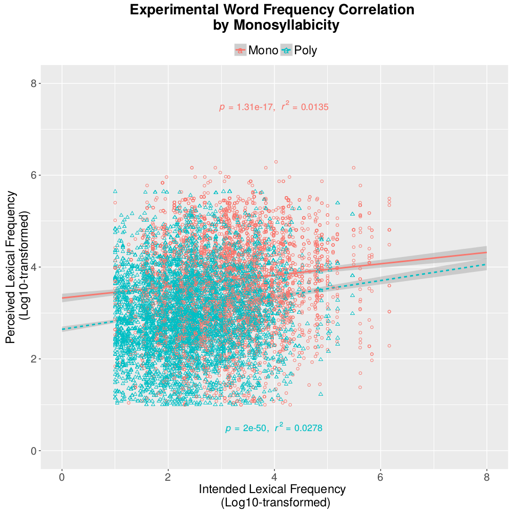

Expectation and Lexical Retrieval in Naturalistic and Experimental Misperception
Project Summary:
Naturalistic mishearings provide data about lexical retrieval, as they instantiate cases where instead of the intended word, a listener accesses an incorrect -- but often similar word in terms of multiple lexical properties. To capture this, a graceful degradation account of lexical retrieval was proposed by Vitevitch (2002). Here, we examine the relationship between the intended word and the the actually-perceived word for one of the main lexical properties, namely token frequency. Using two naturalistic corpora of conversational and sung speech and an experimental corpus, we found there is no general trend towards replacing the intended word with a more frequent word in naturalistic data when contextual information is available, while there is a strong trend of replacing the intended word with a more frequent word in the experimental data of single word recognition. Our results suggest that listeners are sensitive to their experience and expectation of their phonetic and lexical knowledge during speech perception. Our work challenges research on single-word perception (Cooke, 2009; Tóth et al., 2015), especially on the mechanisms of lexical retrieval as well as contemporary models of lexical retrieval such as Shortlist and TRACE. It further highlights the need for conducting misperception research beyond the word-level as well as the importance of ecological validity.
Read more from:
Publications:
Kevin Tang & Andrew Nevins. In revision. Expectation and lexical retrieval in conversational, mondegreen, and experimental misperception. PLoS ONE
Presentations:
Kevin Tang & Andrew Nevins. January, 2017. Expectation and lexical
retrieval in naturalistic and experimental misperception. The 91st Annual meeting of the Linguistic Society of America, Austin, TX, USA. [abstract] [poster]
Token frequency correlation between the intended word and the perceived word
Conversational Data

Experimental Data
